AI 跑得再快，
方向盘在你手里
AI 数字化转型：岗位能力、项目全流程、创新创业，
以及我们能为社区做的事。
从只会聊天，到回到书桌前
这支片子画面全部用代码画，配乐用代码合成：人定方向和审美，AI 来造。
黎健堂大家可以叫我 黎生
我不是算法工程师。
我是一个用 AI 把东西做出来、交给付钱的人的人。
阿里市场销售与业务管理
抖音本地生活服务商
HelyFun 积累的 AI 设计案例模板
东莞市博物馆 AI 赛事公开作品
在做的事AIGC 视频与宣传片 · 小程序与网站 · 企业智能体与工作流 · AI 赛事策划执行 · AI 培训
扎根东莞的 AI 实践者社区
链接创作者、技术人才与实体企业：从项目实战、成果打磨，到产业对接。
全国最大 AI 开源社区 WaytoAGI 东莞本地组织单位 · 字节跳动 TRAE Friends 东莞本地组织单位。
社群成员，东莞本地规模最大的 AI 社群
是 AI 创业者和一线从业者
自 2025 年 8 月起的 AI 活动，每月 1–4 场
沙龙、工作坊、黑客松、展会，每日交流、每周活动、每月比赛
宣传片、短剧漫剧制作，AI 技能实战培训
训练营 + 企业人才对接，让人才和需求精准匹配
技术诊断、Agent 与自动化工作流，嵌入真实业务
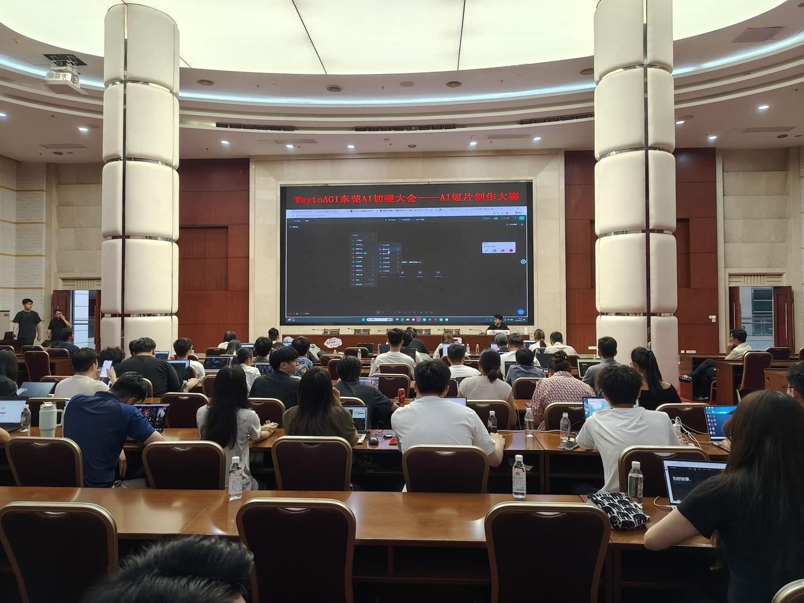
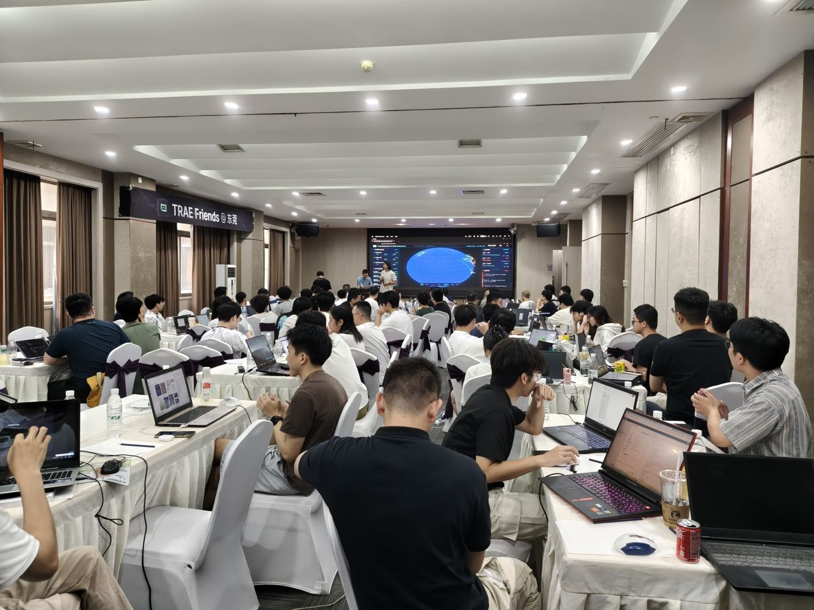
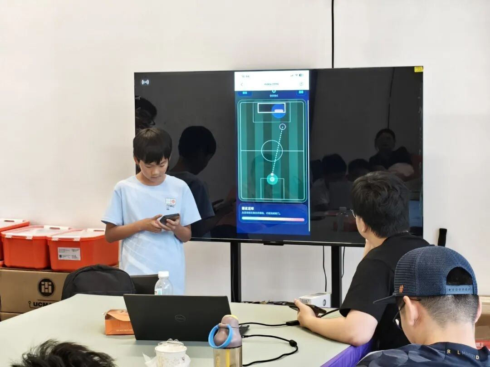
先看一支片子
顺带一提这支片子的画面动效和配乐，全部由代码生成：人定故事和审美，AI 写代码、出画面。
企业出题，人才解题
2026 深圳文博会 · 首创“探展实战黑客松”：参赛者走进 16 万㎡ 场馆，面对真实企业，挖真实需求，交真实方案。
参赛队伍
现场实战
与客户当面沟通
合作意向
正式签约
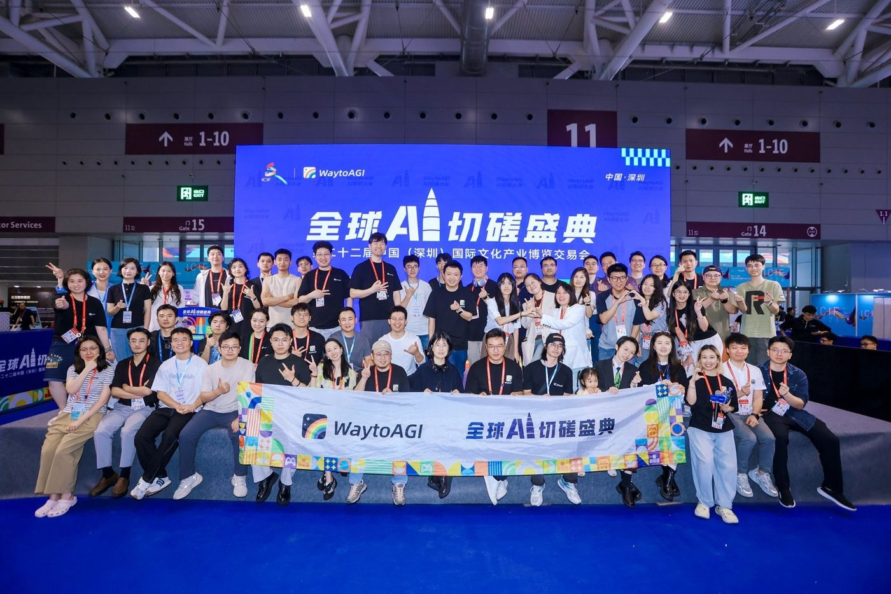
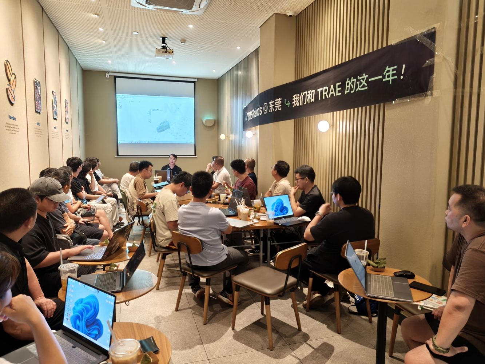
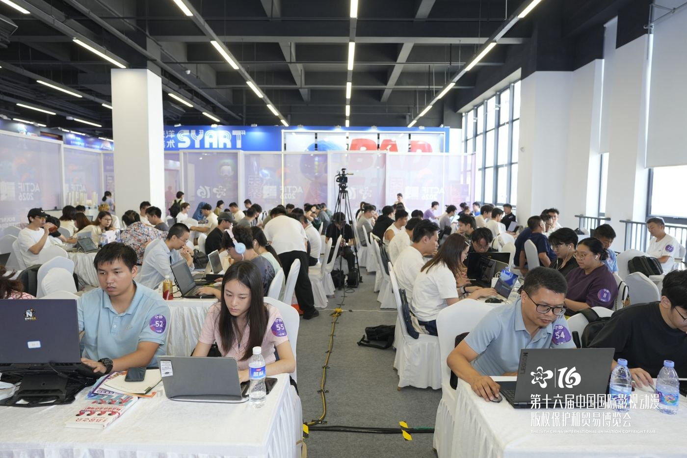
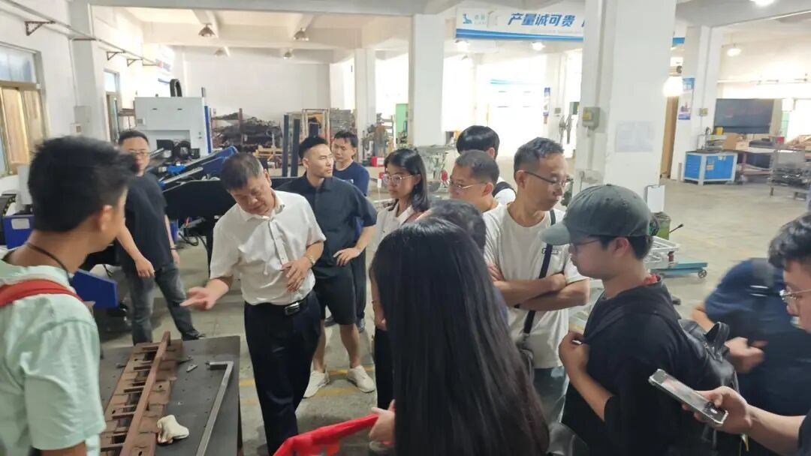
赛后不止于比赛：企客松 50 份作品中 6 组与企业继续对接孵化。
先看清楚，
水涨到哪了
国内多少人在用？全球在比什么？国家怎么看 AI 和就业？企业真用起来了吗？
一年多了 2 亿人，普及率过半
“会用 AI”正在变成和“会用手机”一样的基本功——它不再是简历上的亮点。
我国生成式人工智能用户规模与普及率
大多数人还停在“问问题”。
能用它交出一个东西的人，仍然是少数。
来源CNNIC《生成式人工智能应用发展报告（2026）》，2026-09-29 发布；2025 年数据来自同系列 2025 年报告。
钱差 20 多倍，模型只差 2.7%
全球企业 AI 投资 5,817 亿美元，同比 +130%。私人投资口径不含政府引导基金，会低估中国的总投入。
“美国 AI 生态像少数顶尖选手在单独冲刺，目标是‘诺贝尔奖级’的天才；中国 AI 生态更像一个高水平学习小组。”—— 李开复
条越短，差距越小 · 斜纹 = 不同测试的差距范围
“在未来，基础模型大体上会趋同，数据加上闭环运营，才是新的竞争护城河。”—— 李开复
来源Stanford HAI《AI Index 2026》（2026-04）；李开复访谈片段（WSJ Leadership Institute）。
从“赶紧用起来”，到“油门和刹车一起准备”
方向没有变，AI 照样要发展；变的是：人往哪儿放、效率红利归谁，被正式摆上了桌面。
《生成式人工智能服务管理暂行办法》施行
做 AI 产品，先守规矩：备案、内容安全、个人信息。
国务院“人工智能+”行动意见
2027 年智能终端、智能体等应用普及率超 70%，2030 年超 90%。
《人工智能生成合成内容标识办法》施行
AI 生成的图、音、视频要“亮明身份”。做内容的必须知道。
“人工智能+制造”专项行动
数据采集、标注、数据集产品化被写进制造业的任务清单。
国办发〔2026〕29 号：就业友好型发展方式
6 方面 18 项：就业风险评估、减缓替代影响、收入分配机制、人工智能专项培训（鼓励高校毕业生参加）。
一句话14 个月，从加油门，到油门刹车一起准备——说明 AI 对就业的影响，已经不是假设。
“用上了”和“用好了”之间，隔着一群人
的企业至少在一个职能用上了 AI
已在某处规模化使用智能体
还没开始在全公司规模化
说 AI 对利润有影响，多数不到 5%
McKinsey《The State of AI 2025》，105 个国家 1,993 位受访者。
总部 8,200 人，三年削减约 3,000 个岗位。CEO 原话：太多层级、太多 handoffs（接手次数）、太多管理成本。
39% 的企业领导因部署 AI 裁过员；其中 55% 承认决定是错的，不得不重新招人。
大模型质检主管被要求降薪 40% 或离职，理由是“AI 能自己挑错了”。法院终审：公司违法解除，赔偿 26 万多元。
结论岗位不会凭空消失，但流程会重画。下一章就讲：重画之后，企业要什么样的人。
人更多了，活换了
2026 届全国普通高校毕业生（预计），比上一届多 48 万，再创新高。
来源：教育部，2025-11。
劳动者 39% 的核心技能，五年内会变。WEF《Future of Jobs Report 2025》
记住要跟上的不是岗位名称，是岗位里“活”的变化。
你可以是，
任何一种人
不需要先有专业技能。AI 放大的，是你已经有的东西：你的专业、你的通识、你在意的事。
你可以是一名
设计师
也可以，同时是好几种人。
以前：阿里 5 年市场销售与业务管理 · 抖音本地生活服务商 2 年。
这一年，用 AI 当过——
不是我多厉害两年前，这些事要一个设计团队、一个开发团队、一个视频团队；现在是一个人，加一群 AI。
普通人身上，发生了三层变化
几乎没人在报“我学会了哪个工具”。大家讲的都是同一件事：AI 来了以后，一个人该把自己的哪些东西重新升级一遍。
把活交出去
有标准答案的、0 到 60 分的活，交给 AI
500 名员工、300 多台电脑的资产盘点，他用 AI 做了个小工具发给同事。
一听领导布置写材料就头疼。学了 AI 公文写作之后——
指挥 AI
给 AI 分工、定规矩、验收结果
公司困难，技术团队缩到只剩他一个。前端、后端、App、运维，全压在他身上。
“站在 AI 的肩膀上，感觉自己强得可怕。”
给 9 个 AI 安排工位、配邮箱、建任务台，还定了一套“宪法”：谁接活、谁交接、谁验收。
“没证据，就不算完成。”
重新认识自己
发现自己原来还能做什么
DeepSeek 出圈时才第一次认真接触 AI，连“提示词”是什么都说不清。笨办法：不会的问 AI。
用 AI 辅助拍视频日记；暑假带爱打游戏的儿子，用 AI 做游戏去参赛。
来源快刀广播站 1011 期《从学会用 AI，到重新认识自己：分享同学们的 1000 天故事》。
他们都没有“先准备好”
“AI 没有替他们决定人生往哪儿走，但让他们看到了，自己原来还可以走到别的地方。”
“不用等准备好了再开始。这些人都是先动手，再慢慢想通的。”
—— 快刀广播站 1011 期、1031 期
AI 不替代你的专业，它放大你的专业
通识能力 = 说清楚 · 会验收 · 有审美 · 会学习 · 守边界
AI 能做 0 到 60 分的重复工作；60 到 100 分，还得靠你的专业判断和责任。
从“我和一个工具”，到“我和一支团队”
定目标
做给谁、做成什么样、怎么才算好
分工
给每个 AI 一个角色：查资料的、写代码的、出画面的
执行
几个 AI 同时干活，人不用守着
验收
没证据不算完成：能打开、能运行、数字能核对
沉淀
把这次的做法存成“技能”，下次一句话调用
我给：学校的五项要求、7 篇文章、一段视频、我想讲的话。
AI 做：读完材料，上网查最新数据，写成网页，自己截图检查每一页。
我再看：挑毛病——“这张图不好看”“这页对学生太深了”“案例不够”，它再改。
从问“AI 又能干什么”，
变成问“这件事该派谁去干”。
一个人 + 一群 AI，做一支发布会片
苹果发布会式结构，中英双语
参赛版 v7 获比赛第一名
教训：最大的一次返工是结构被否。开工前，就该拿参考片对齐结构。
制作手记opc8838-hub.github.io/keynote · 客户项目，部分画面由 AI 生成。
企业要的，
是能落地的人
用一个已经落地的项目，看技术岗、业务岗、运营岗各干了什么、要什么能力——毕业以后能去哪、要准备什么。
对应议程 ① 企业真实项目案例引入：AI 数字化转型岗位人才能力素养解析
同一个项目里，三类岗位各干了什么
技术岗
TECH- 搭赛事网站：报名、投稿、展示、投票
- 设计数据怎么存、投票怎么防刷
- 部署上线、配域名
- 现场设备和游戏手柄测试
- 导出数据、统计结果
AI 帮：写页面和接口代码、生成测试清单
把需求做成能用的系统，并保证它可靠。
业务岗
BUSINESS- 和博物馆对接，问清目标和指定文物
- 定两个赛道、比赛规则和评分表
- 评估限制：断网、手柄、人手
- 排期、分工、请评委
- 和客户确认每一步
AI 帮：起草规则、整理会议纪要、做同类赛事对比
把客户的一句话，变成能执行的方案。
运营岗
OPERATION- 招募参赛者：海报、推文、社群
- 现场签到、引导、答疑
- 作品整理、展示、推投票
- 赛后复盘、写新闻稿
- 作品库长期运营
AI 帮：出海报和文案、剪宣传视频、统计数据
让对的人来、让过程顺、让结果被看见。
结论三类岗位缺一个，项目都落不了地。下一页，把这三句话展开成能力清单。
三类岗位，企业具体要什么
知识储备 KNOW
操作技能 DO
职业素养 BE
专业对照数字媒体技术 → 运营岗、技术岗里的前端与视觉；计算机应用技术 → 技术岗；懂一个行业的人 → 业务岗。
AI 岗位 ≠ 训练大模型
“重算法理论、轻落地应用”是最常见的误会。招聘市场的数据说的是另一件事。
2026 年 1–7 月新发 AI 岗位里，AI 应用开发岗的占比。
科锐国际 × 得到 AI 学习圈 2026 报告；脉脉高聘，2026-08。
但是“AI 是加速器，不是入场券。”基本功还得自己挣——下一页讲哪些基本功。
五项基本功
把需求写成能执行的话
目标、输入、标准、不做什么。说不清楚，AI 和同事都做不对。
没证据，就不算完成
能不能打开、数字口径对不对、来源能不能点开。
一段一段追问到弄懂
17 岁的陈广宇用 Gemini 读论文：不是让它总结，是追问到真懂。
把学的东西写出来
一篇博客、20 个关注者，被一位对的学者看到 → 硅谷实习 → Kimi 论文共同一作。
知道什么不该交给 AI
隐私、版权、AI 内容标识、需要确定性的计算。
来源快刀广播站 1007 期（陈广宇）、1011 期、1012 期。
一件事，经过了几个人的手？
每多一次接手，就多一次等待、一次沟通、一次出错的可能。接手次数是能数出来的。
判断标准经你手之后原封不动传下去 = 传递；下一个人拿到的东西不一样了 = 判断。名字（头衔、岗位名称）保护不了你，流程里的位置才决定你安不安全。
毕业以后，可以去哪
六类单位、起步岗位都写在卡上。点开看：日常做什么、要会什么、准备什么作品、怎么往上走。
本地中小企业 · 商家
很多老板知道要用 AI，身边却没有会用的人。
点开看详情 →AI 服务商 · 软件公司
给别的企业做 AI 落地，最缺能把东西交付出去的人。
点开看详情 →制造企业 · 数字化部门
工厂里九成的地方还没被 AI 碰过，竞争最少。
点开看详情 →广告 · MCN · 影视
AI 视频在改变整个行业，最缺有审美又会用 AI 的人。
点开看详情 →电商 · 跨境
商品图、详情页、短视频、客服，每一块都在用 AI 重做。
点开看详情 →政企 · 事业单位 · 社区 · 学校
公共服务也在数字化，需要懂 AI、又有耐心的人。
点开看详情 →会用 AI，已经是门槛，不是加分项
要求“会使用 AI 工具”的岗位，同比增长。不只技术岗，产品、运营、创意岗都在要。
猎聘，2026 年节后开工首周
新发 AI 岗位里，应用开发岗的占比——正是高职同学够得着的那一层。
脉脉高聘，2026 年 1–7 月
国家五年发布的 72 个新职业里，和 AI 直接相关的数量。
人社部
发布 11 个新职业、23 个新工种，其中有 “智能体开发员”、“适老化改造设计师”；“生成式人工智能系统应用员”“生成式人工智能动画制作员”等 AI 职业正在配套技能评价标准。
五类新角色里，没有一个叫“AI 使用者”
它们都在回答同一个问题：AI 干完活之后，剩下的事谁来扛？点开卡片看真实案例。
业务自建者
业务人员自己动手搭应用和智能体，不再等 IT 排期。
像“自己修水管的住户”——你比物业更清楚哪根管子在漏。
点击翻开 →真实案例Cursor 一位市场人员自己做了个应用，批量生成几千份增长素材，把外包代理的活接了回来；DevRev 一位没有技术背景的销售运营，做了能读写 CRM 的机器人并投入使用。
在学校怎么练给自己的班级、社团做一个真的有人用的小工具。
工作流设计师
看整条流程：哪些交给 AI，哪些判断留给人，交接点放在哪。
像“重画整栋楼的管线图”。
点击翻开 →真实案例Writer 让智能体从销售通话里提取客户问题，和内容库对比，找出缺什么；编辑只负责决定补什么。Greenhouse 在每个部门设“创新负责人”，专找适合自动化的流程。
在学校怎么练把一件事画成流程图，数接手次数，标出哪一步给 AI。
AI 治理者
盯风险和合规，把 AI 关在公司允许的边界里。
像“安全主管”，只不过盯的是 AI 有没有越线。
点击翻开 →真实案例一家云服务公司：任何新 AI 应用都要登记、说明理由、过合规检查，再由委员会投票上线。Scale AI 专门养团队攻击自家模型和智能体，查幻觉和数据泄漏。
在学校怎么练给你做的每个工具，写一页“它不能做什么”。
领域知识负责人
不一定懂 AI，但一定懂业务；把多年经验写成 AI 能读懂的“处方手册”。
像“听机床声音就知道哪坏了的老师傅”。
点击翻开 →真实案例Workera 每个领域配一名专家（甚至博士），核心工作就是把理解写成文档交给 AI。受访企业里五分之四都在做“把核心专家的知识记录下来”。
在学校怎么练采访一位老师傅或店主，把他的经验写成一份 AI 能用的手册。
智能体运营负责人
几十个智能体同时在跑：谁升级、谁下线、权限怎么设、谁跑偏了。
像“牧羊人”，羊群越大越要有人看。
点击翻开 →真实案例Bolt.new 设了一个中央角色：数据治理、访问控制、智能体托管，以及监控和下线行为异常的智能体。
在学校怎么练管好你自己的提示词和技能：有版本、有记录、会淘汰。
来源BCG 调研，10 个国家、十多个行业、50 多家企业；经快刀广播站 1012 期解读。这些职责大多还没有正式岗位名，而是先“长在”原来的岗位上。
毕业前，准备好这三样
三件作品
- 一个能打开的网页或小程序
- 一支 AI 视频，或一套设计
- 一份“数接手次数”的流程改造方案
公开的过程
- 公众号、小红书、B 站、GitHub 都行
- 写你怎么做出来的、踩了什么坑
- 你需要的不是很多读者，是一个对的人
真实项目经历
- 社团、志愿服务、横向项目、实习都算
- 写清楚：我交付了什么、数据是多少
- 证书是加分项，作品才是敲门砖
一个项目，
从一句需求到上线
每一步在做什么？AI 做了什么？人必须做什么？你们能接哪一段？
对应议程 ② 数字化业务全流程拆解：从需求调研到迭代落地
从需求调研到持续迭代，六步走完
同一个博物馆项目，按产业里真实的实施链路拆开。每一步都能点开看细节。
业务需求调研
去展厅看，问清楚为什么要办
需求梳理与可行性评估
定赛道，找出断网、手柄两条限制
方案规划与原型设计
规则、评分表、网站原型
开发部署
AI 编程做赛事网站并上线
测试上线
手柄逐个测，录屏备用
运营监控 · 反馈 · 迭代
82 条作品，投票，复盘
规律：越往后 AI 越能干（写代码、出页面、算数据）；
越往前越要靠人（去现场、问清楚、拍板做什么不做什么）。
每一步里，你能接哪一格？
| 环节 | |||
|---|---|---|---|
| 01需求调研 | 了解现有系统和设备 | 跟访记录、整理需求纪要 | 搜集同类活动案例 |
| 02梳理与评估 | 评估技术可行性：网络、设备 | 写需求清单、约束清单 | 估算宣传渠道和物料 |
| 03方案与原型 | 画可以点的原型 | 起草规则和评分表 | 设计海报和宣传方案 |
| 04开发部署 | 写页面、表单、上传，部署上线 | 盯进度，找客户确认 | 准备宣传内容和社群 |
| 05测试上线 | 写测试用例、修问题 | 组织客户验收 | 现场签到、引导、答疑 |
| 06运营与迭代 | 看数据、做下一版 | 写复盘、整理案例 | 作品整理、推文、新闻稿 |
专业对照数字媒体技术 → 运营岗，加上技术岗里的原型和视觉；计算机应用技术 → 技术岗；想往管理走的 → 业务岗。
做项目，守住三条规矩
先对齐，再开工
连盈发布会片做到一半，最大的一次返工是整体结构被否，前面白做。博物馆项目则是先去展厅看过，才定规则。
怎么做开工前拿一个参考样例给客户看：“是这样吗？”
该稳的地方，不用 AI
投票计数、作品编号必须一模一样地准，不能让 AI “生成”。小程序“泵速计算助手”也是这样：开发时让 AI 写文档、做原型、跑测试；医护用的时候，计算完全不经过 AI。
怎么做做的时候用 AI 提速；用的时候，要像计算器一样稳。
没证据，不算完成
AI 常说“做完了”，打开一看只做了一半。博物馆现场前，每款游戏都用手柄测过，还准备了录屏备用。
怎么做交付时附上证据：能打开的链接、测试记录、截图。下一页练一下。
这份 AI 报告，哪一行不能发？
11 月用户活跃情况简报
由 AI 自动整理 · 数据已可视化 · 点击你认为有问题的一行
“如果人要跟 AI 比速度，那肯定是没有任何希望的。”—— 菲尔兹奖得主 邓煜
他接着说：人始终是主体，AI 是工具。汽车能跑一两百公里的时速，但它不知道要去哪儿——你得一直坐在驾驶座上。
这个错误是真事：快刀青衣让 AI 整理数据，做出一份很精美的网页报告，差点直接发出去，拉到最后一屏才发现口径混了。
来源快刀广播站 1025 期（邓煜演讲解读）。
每个人的起点，
都特别小
小到可能只是一个让你不舒服的瞬间。但在 AI 时代，这个瞬间真的可能长成一个不错的产品，然后找到和你一样在意的人。
对应议程 ③ AI 创新创业方向解读：可落地赛道、机遇与风险研判
以前没人立项的小需求，现在一个人就能做
DayDayCup
拍咖啡杯、奶茶杯，把杯贴变成电子贴纸收藏册。
袋袋集
毕业搬宿舍，一沓奶茶纸袋扔不下手——于是自己做了收藏工具。
泵速计算助手
医生朋友吐槽：给药剂量换算全靠手算，算完还没法复核。
她写过
古代女诗人不该只记得李清照。AI 不写诗，只帮人从古籍里找真人。
回家计划
宠物领养完就断联，这件事不对。一个人 + AI 搭了一整套制度。
你自己就是第一个用户，你自己的需求就是产品的起点。
来源快刀广播站 1031 期：快刀青衣担任微信小程序开发者大赛南部及海外赛区决赛评委的记录。
工厂里，九成的地方还没被 AI 碰过
国家工业信息安全发展研究中心《制造业数智化转型能力水平（2026）》，2026-09；长江商学院 2026 年一、二季度规上工业企业 AI 调研（2000 余家）。
不是 AI 不行，
是还没人把工厂的场景翻译成 AI 能干的活。
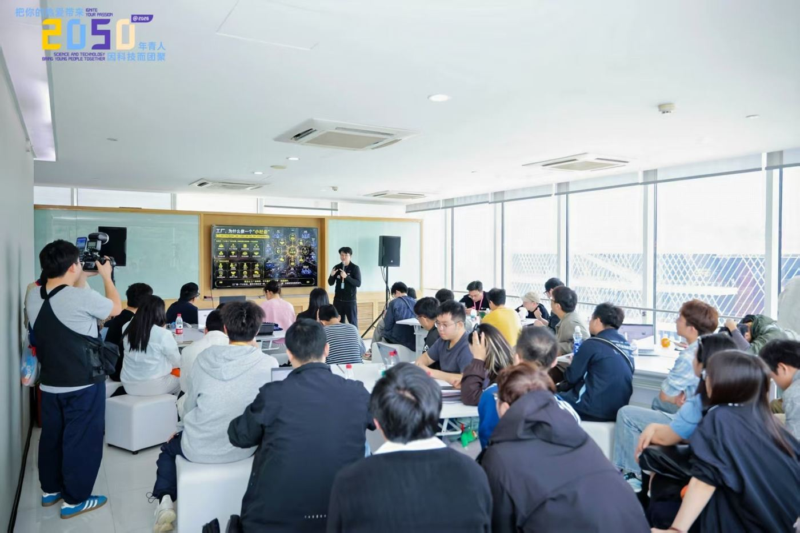
· 质检拍照记录 → 整理标注成数据集
· 纸质点检表、工艺卡 → 电子化 + 问答
· 老师傅经验 → 写成 AI 能读的手册
· 外贸产品图、说明书、展示视频
截至 2026 年 6 月，全国高质量数据集超 1,565 PB；国家数据局持续推进数据标注先行先试。
门槛适中、能找到第一单的六个方向
本地商家 AI 内容
海报、菜单、五连图、短视频。用模板和技能，把一次做成每次。
小程序 / 网页小工具
解决一类人的一个小麻烦：报名、预约、换算、收藏、查询。
AI 视频与宣传片
企业、学校、社区的宣传片，产品动效，活动快剪。
工作流与智能体搭建
把一家小公司里重复的一件事，做成能反复调用的技能。
行业数据整理与标注
制造、文博、农业：把纸上的、老师傅脑子里的，变成数据和手册。
社区与公共服务数字化
科普、适老化辅导、社区宣传素材、便民工具。
这些方向，我们和社区伙伴都做过
hely.fun
商家不会写提示词：选模板、填信息，就出五连图、海报、商品图。1,600+ 设计案例，已上线付费。
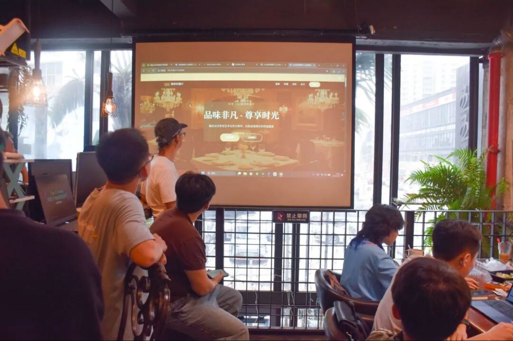
老牌西餐厅美食黑客松
围绕餐厅的宣发需求，参赛者现场产出海报、短视频和官网方案。
WaytoAGI 2026 共创日历
365 天、365 位 AI 创作者的作品，征集、整理、排版用多维表格全自动管理。
漫剧自动化生产系统
剧本 → 分镜 → 角色道具资产统一管理 → 风格标准化输出，一条流水线。
电商批量自动发货系统
抓取商品、自动铺货、发货到海外平台，客服和销售数据分析一站完成。
连盈科技发布会片
给一家康复床工厂做的苹果式发布会片，参赛拿了第一名。
动手之前，先问自己五个问题
拿一个例子过一遍：做一个“校园二手书”小程序。每想清楚一条，就点亮一张。
会不会惹麻烦？
合规要收同学的手机号、宿舍号吗？AI 生成的图片，标了“AI 生成”吗？
可以这样做只收必要的信息；AI 做的图按规定标出来；用正规平台的 AI。
○ 点击：想清楚了东西是不是你的？
知识产权书的封面图、字体、背景音乐、动漫形象，能随便拿来用吗？
可以这样做封面让卖家自己拍；字体和音乐用免费可商用的；不用别人的 IP。
○ 点击：想清楚了人多了，付得起吗？
成本AI 每识别一本书都要花钱。开学那周，全校一万人一起用呢？
可以这样做先算一次花多少钱；能扫书号就别每次都调 AI。有个小程序上线一周，服务器费用就爆了。
○ 点击：想清楚了别人为什么用你的？
同质化闲鱼、校园群都能卖书，凭什么用你的？
可以这样做只做本校：按专业、按课程找教材，开学那两周最好用。
○ 点击：想清楚了谁会掏钱？
盈利模式同学会付钱吗？还是打印店、书店、学长学姐？
可以这样做先免费跑起来；先找到 3 个愿意付钱的人，再加功能。
○ 点击：想清楚了把一个不舒服的瞬间，写成一个产品
- 这周：先做一个只给自己用的版本。
- 下周：找 3 个“也这样”的人试用，看他们卡在哪。
- 第三周：把过程写出来、发出去，找到更多在意的人。
记住如果你心里有一件事一直觉得“要是有人做一个就好了”——现在可以换个想法：先做一个自己会用的。
把学到的 AI，
用在身边的社区
能做哪些事？怎么持续做下去？每个同学从哪一级开始参与？
对应议程 ④ 高职院校 AI 社区服务建设路径、运行模式与学生参与渠道
AI 社区服务，四类能马上做的事
社区 AI 体验日
AI 工具体验、青少年 AI 创作营、AI 换脸 / 语音诈骗识别科普。
一个周末的小程序
活动报名、维修预约、失物招领、垃圾分类查询、办事指南问答。
交给社工一个“技能”
活动海报、推文、节日物料。不是替他做一百张，而是做一个他自己会用的模板。
教长辈用、也教长辈防
挂号、打车、视频通话；大字版操作卡；识别 AI 诈骗。
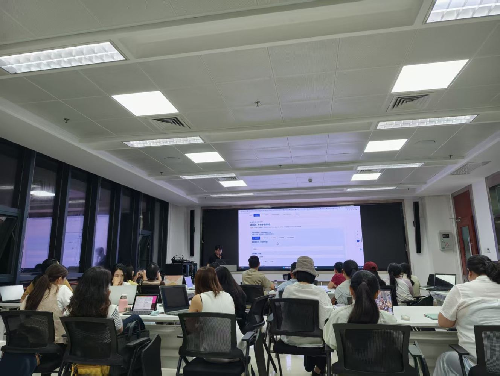
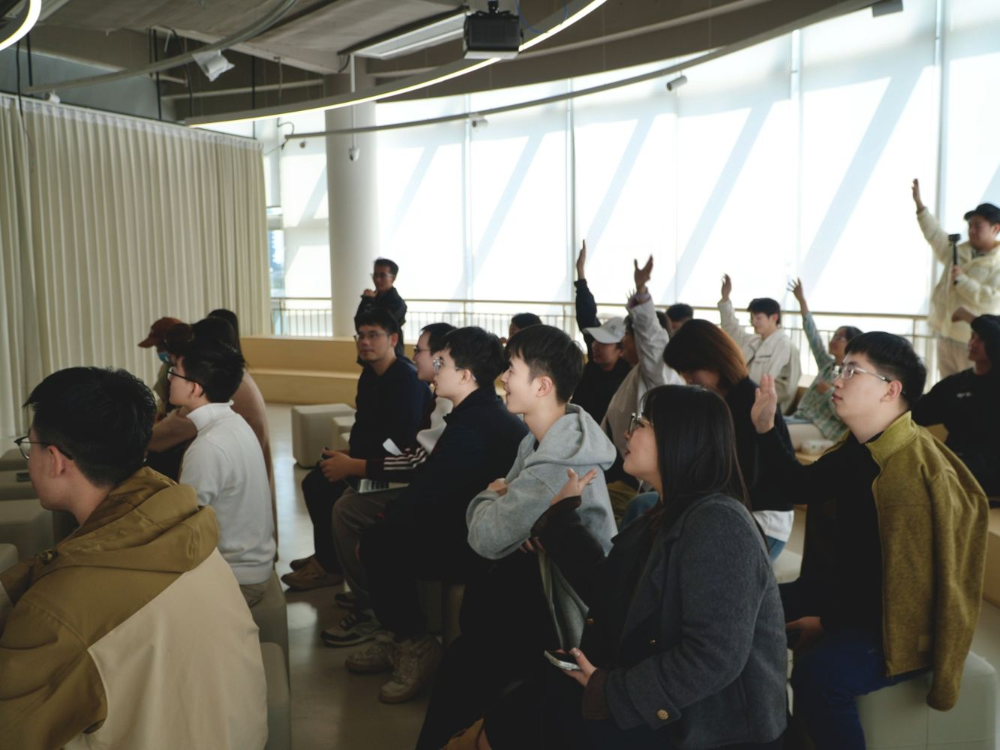
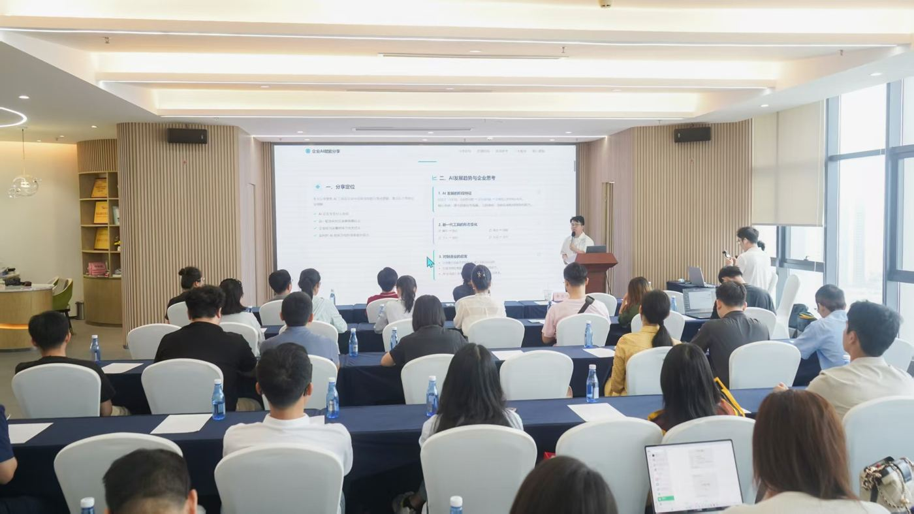
不靠一阵风，靠一个循环
校企资源赋能
企业和社区出真实需求、出导师、出工具账号。
解决：需求从哪来
志愿服务实践
科普、适老化辅导计入志愿时长。
解决：学生为什么来
横向小项目
社区、商家的付费小单，老师带队交付。
解决：钱从哪来
学分置换
项目成果可抵课程实训学分。
解决：时间从哪来
竞赛项目孵化
好项目送去小程序大赛、黑客松、创新创业赛。
解决：好项目去哪
你现在在哪一级？
专业社团
每周一次 AI 作品打卡，互相点评。
课程实训
用社区、企业的真需求当作业。
志愿服务
进社区做科普、适老化辅导、宣传素材。
顶岗实习 / 横向项目
跟企业真交付，有验收、有报酬。
创新创业项目
验证过需求的项目，进孵化、参赛、找第一批付费用户。
原则不需要一上来就创业。每一级都留下作品——作品集，比证书更能让人看见你。
碳基社区能和学院接上的四件事
以下是提议，具体方式会后和学院一起商量。
切磋大会 / TRAE Friends
WaytoAGI 东莞 AI 切磋大会（全球 40 多个城市联动）和字节 TRAE 技术交流，向同学开放。
企业黑客松
企业出题、人才解题。文博会那一场：68 个合作意向，8 份签约。
AI 创作者进厂计划
入企调研 → 交流共创 → 作品打磨 → 成果路演 → 对接落地。
真实需求池
社区、商家、企业的小需求，变成课程实训和横向小项目。
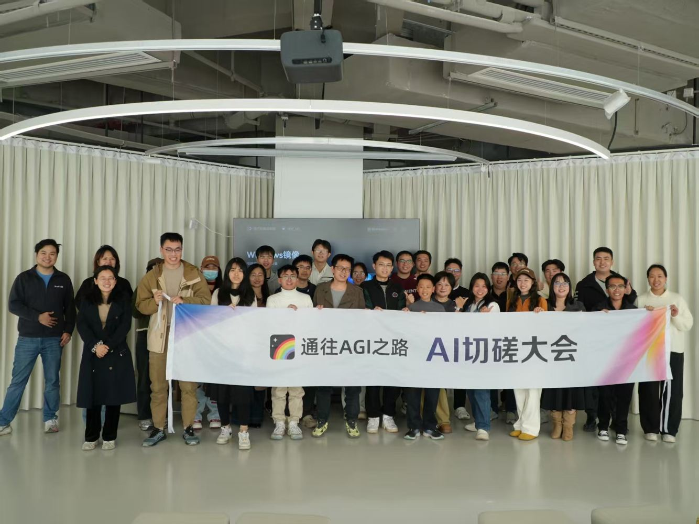
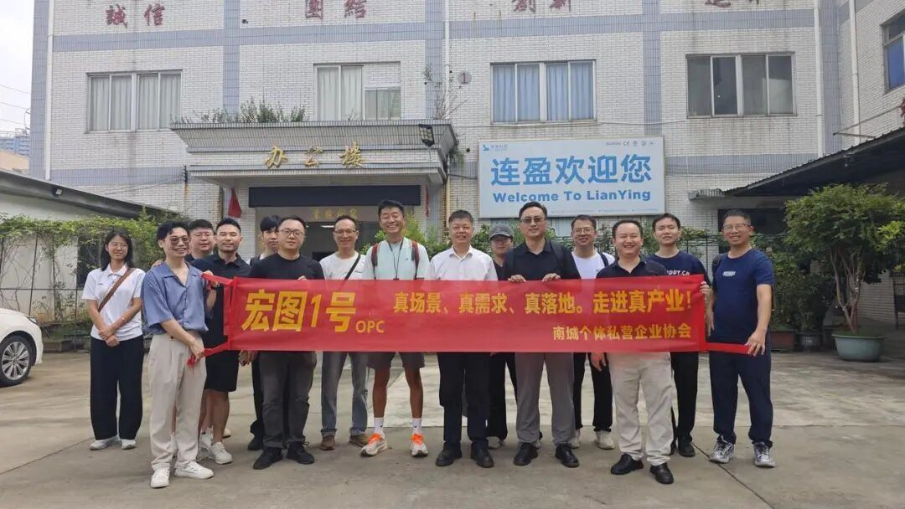
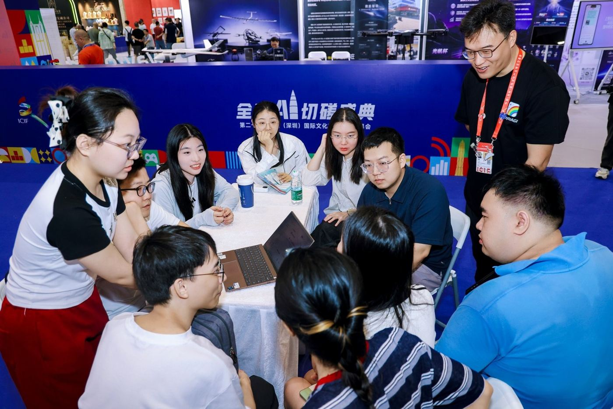
工具会变，
这几句话不会
从七篇文章里，挑出关于思维和方法、能用很久的十二句。
今天最想留给你们的十二句话
出处快刀青衣《快刀广播站》1005 / 1007 / 1011 / 1012 / 1015 / 1025 / 1031 期。推荐自己去听原文。
真正重要的，不是会哪个工具
视频李开复接受 WSJ Leadership Institute 访谈片段（来自“开复说AI”）。前五个词是他说的，第六个是我加的。
今晚就能做的四件事
数一数
拿你这周做的一件事，数它经过几个人的手。你那一手，有多少是传递，有多少是判断？
记下来
写下最近一个让你不舒服的瞬间。哪怕很小。
做出来
先做一个只给自己用的东西。网页、小程序、一个技能都行。
发出去
把过程写出来、发出去。你需要的不是很多读者，是被一个对的人看到。
AI 跑得再快，方向盘在你手里。
轮到你们提问了
Q1我不会写代码，能做 AI 相关的工作吗？
能。小程序大赛 30 多个项目只有一两个开发者以前写过代码。但“不会写代码”不等于“不用懂”：要能说清需求、能验收结果、知道代码大概在干什么。
Q2高职生和本科、研究生比，AI 时代的优势在哪？
动手和落地。基础模型是少数人的比赛，应用落地层要的是能把东西做出来、交出去的人。真实项目、作品集，比学历更能说明你。
Q3想接社区或商家的小项目，第一单从哪来？
从身边开始：学院活动、社团、学校周边的店、实习单位的一个流程。先免费或低价做一个，做好了，案例就是下一单的敲门砖。
Q4AI 会不会让我学的专业没用？
会让专业里“传递”的部分变少，让“判断”的部分更值钱。数媒的审美、计算机的工程习惯，都是判断的底子。
Q5毕业找 AI 相关的工作，要准备什么？
三件作品、一个公开的过程、一段真实项目经历。简历上别写“熟练使用 AI 工具”，写“我用 AI 交付了什么、数据是多少”。
Q6想参与 AI 社区服务，从哪里开始？
从志愿服务开始：去社区问工作人员“每天最烦的一件事”，再挑一个能一个周末做出第一版的。碳基社区的活动也欢迎同学来当助教。
Q7想参加黑客松，要准备什么？
一台电脑、一个熟练的 AI 编程工具、一个作品集链接，再找两个和你专业不一样的队友。碳基社区的活动欢迎同学们来。